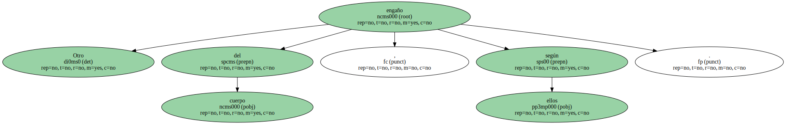

Hay veces que el cuerpo nos engaña por el puro placer de engañarnos.
Dicen , por ejemplo , que algunas tardes a los mancos les duele el brazo que no tienen : es curiosa esa nostalgia que el organismo expresa por el miembro perdido.
En las novelas de aventuras el que engaña es el sentido de la vista , que hace que el explorador desorientado descubra un oasis donde sólo hay una duna y los restos de un camello muerto.
Los espejismos , según el diccionario , no son más que meras ilusiones ópticas , pero yo , que nunca he sido personaje de novela ni compañero de aventuras de Lawrence de Arabia , lo más parecido a un espejismo que he visto son esos bichitos blancos con forma de paramecio que culebrean sobre el forro oscuro de los párpados.

Se llaman fosfenos , y es divertido seguirlos mientras sobreandan en la inestable marea de los ojos.
A lo mejor esos minúsculos peces abisales existen de verdad dentro de nosotros y lo que ocurre es que sólo en raras ocasiones podemos verlos.
Cuando no los vemos sino que oímos en nuestro interior su sordo zumbido de bacterias inquietas , los médicos hablan de tinnitus y de acufenos.
Otro engaño del cuerpo , según ellos.
Dicen que la causa de ese silbido o ese zumbido es la irritación del nervio acústico , y a mí no me extraña que el martillo , el yunque y el estribo puedan de golpe ponerse a armar follón sólo porque sí , porque les viene en gana.

Nuestro oído interno es una pequeña pero completa fragua de Vulcano , y a veces el sueño del sonotone produce monstruos : cualquiera diría que me he pasado a la página de pasatiempos y estoy proponiendo una adivinanza sobre un lienzo de Velázquez y un grabado de Goya.
Según mis noticias , eso del tinnitus puede deberse a un simple tapón de cera o a la inflamación de una membrana.